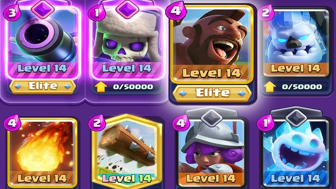

Clash Royale is a really big strategy game. The game was released on March 2, 2016. It was made by supercell which is also the same creator of Clash of Clans. The game is a mix of tower defense, card collecting, and multiplayer online battle arena. The game is free to play but has in-app purchases. There are many different game modes such as 1v1, 2v2, and special events. The game has a ranking system where players can earn trophies and move up in arenas. The game has a large competitive scene with many players participating in tournaments and events. Overall, Clash Royale is a fun and engaging game that has stood the test of time. It has a dedicated player base and receives regular updates from the developers to keep the game fresh and exciting.
There are many different cards in Clash Royale, each with its own unique abilities and stats. Some cards are more popular than others, and players often have their own favorite cards to use in battle. Some of the most popular cards in the game include the Hog Rider, the Pekka, and the Witch ect. Players can also create their own decks of cards to use in battle, and there are many different strategies that players can use to win matches. Overall, the variety of cards and strategies in Clash Royale adds depth to the gameplay and keeps it interesting for players.
Let me tell you about some of the highest win rated decks in Clash Royale. The most popular deack is the 2.6 Hog Cycle deck. This deck is very fast and can cycle through cards quickly. The main objective hinting the name is to get the Hog Rider to the enemy tower as quickly as possible. The deck also includes cards like the Ice Spirit, Skeletons, Ice Golem, Musketeer, Zap, Fireball, and Cannon to help defend. This deck is very effective in lower arenas and is a great choice for players who want to play aggressively and quickly. The winrate for this deck is around 67-72% depending on the skill level of the player.

Another popular deck also known as the fastest 3 crown deck known as the elite barbarians elixir pump cycle deck. This deck is also very fast and can cycle through cards quickly. The main objective of this deck is to get 3 crowns as quickly as possible. The deck includes cards like the Elite Barbarians, Ice Golem, Skeletons, Fire Spirits, Minions, Zap, and Cannon to help defend. This deck is very effective in lower arenas and is a great choice for players who want to play aggressively and quickly. The winrate for this deck is around 45-55% depending on the skill level of the player.

Some tips for new players in Clash Royale include focusing on building a strong deck, learning how to effectively use elixir, and practicing good placement of cards during battles. It's also important to be patient and not rush into battles without a solid strategy. Joining a clan can also be beneficial, as it allows players to share tips and strategies with each other and participate in clan wars for additional rewards. Overall, the key to success in Clash Royale is to keep practicing and learning from each battle.
Here is a video for the best decks in Clash Royale
| Deck Name | Main Cards | Win Rate |
|---|---|---|
| 2.6 Hog Cycle | Hog Rider, Ice Spirit, Skeletons, Ice Golem, Musketeer, Zap, Fireball, Cannon | 67-72% |
| Elite Barbarians Elixir Pump Cycle | Elite Barbarians, Ice Golem, Skeletons, Fire Spirits, Minions, Zap, Cannon | 45-55% |